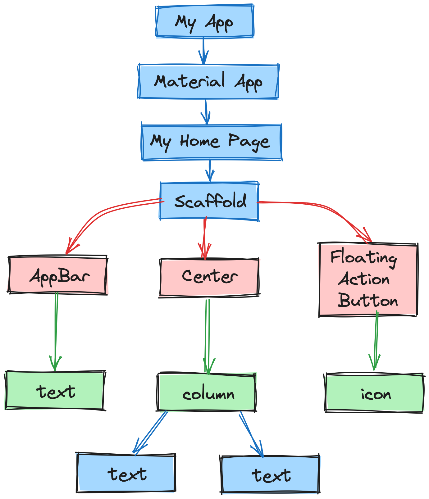
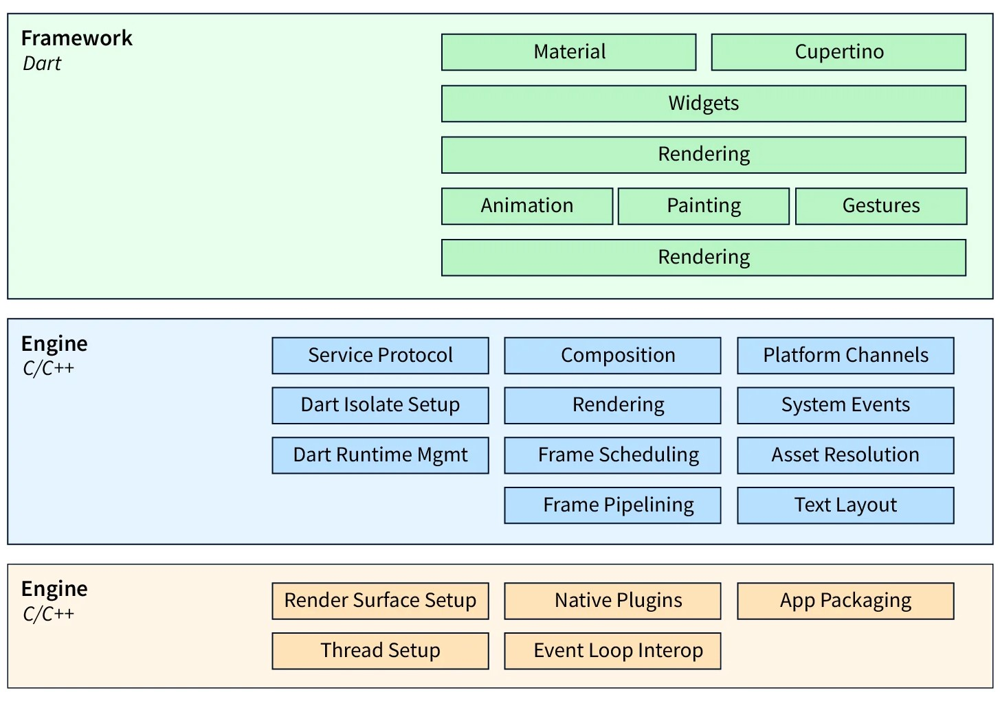
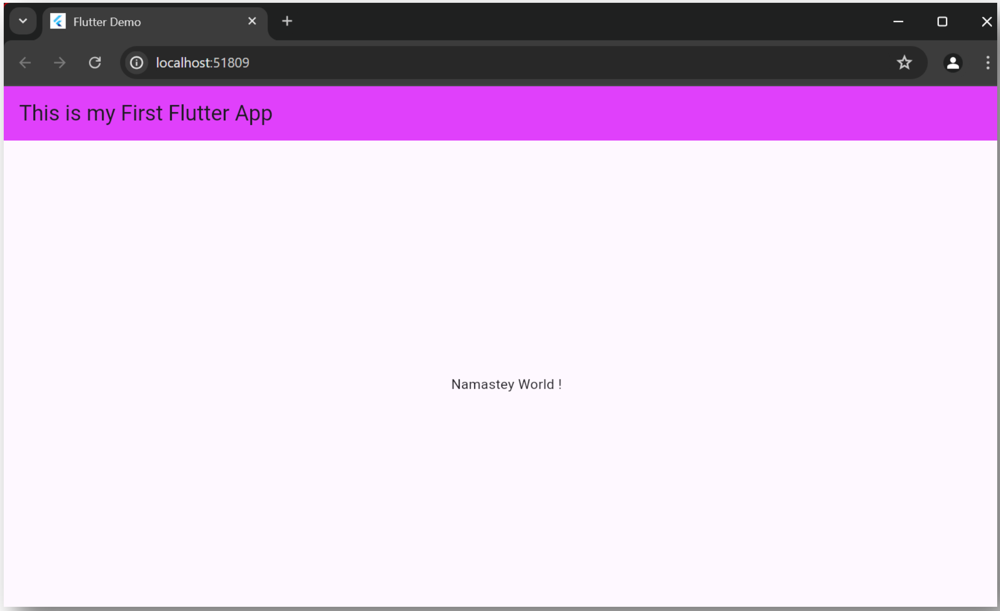
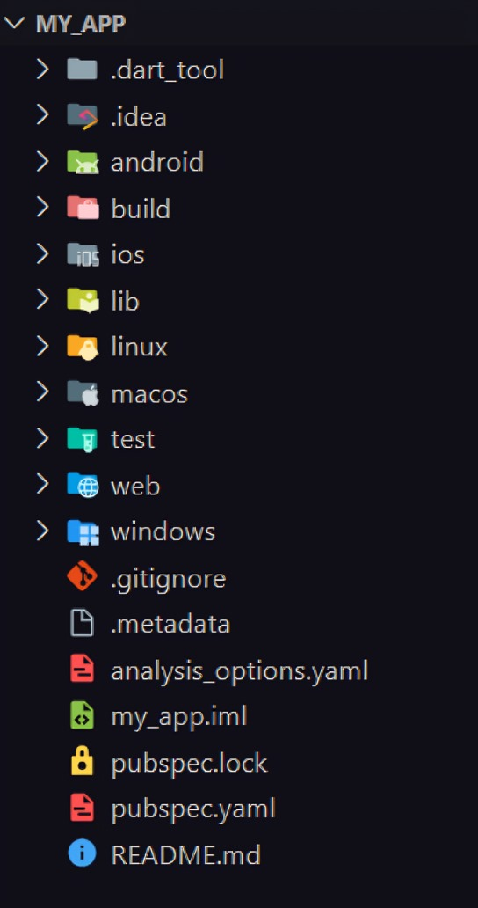
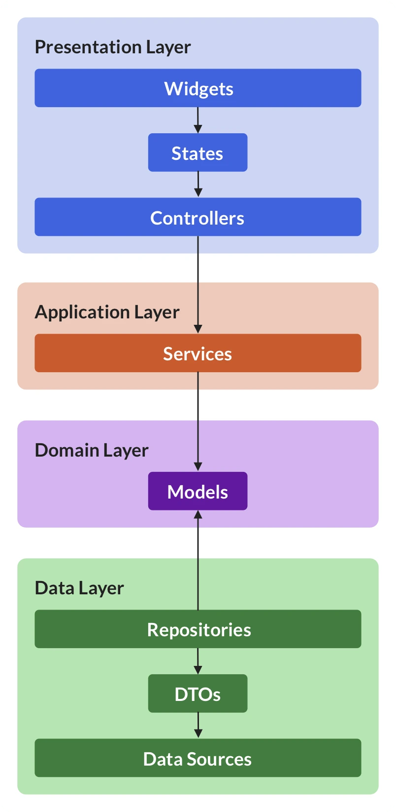

01: Introduction to Flutter
02: Why Flutter
03: Features of Flutter
04: Advantages of Flutter
05: Disadvantages of Flutter
06: Flutter Installation in Windows
07: Flutter Installation in macOS
08: Architecture of Flutter
09: Gestures
10: State Management
11: Layers
12: First Flutter Application
13: Flutter Folder Structure
14: Flutter Application Architecture With Layered Approach
15: Question
Introduction to Flutter
Why Flutter
Features of Flutter
-
Open-Source:
- Flutter is a free and open-source framework for developing mobile applications.
-
Cross-platform:
- This feature allows Flutter to write the code once, maintain, and can run on different platforms.
- It saves the time, effort, and money of the developers.
- Minimal Coding.
-
Hot Reload:
- Whenever the developer makes changes in the code, then these changes can be seen instantaneously with Hot Reload.
- It means the changes immediately visible in the app itself.
- It is a very handy feature, which allows the developer to fix the bugs instantly.
- Hot Reload & Hot Restart.
-
Accessible Native Features and SDKs:
- This feature allows the app development process easy and delightful through Flutter's native code, third-party integration, and platform APIs.
- Thus, we can easily access the SDKs on both platforms.
-
Minimal code:
- Flutter app is developed by Dart programming language, which uses JIT and AOT compilation to improve the overall start-up time, functioning and accelerates the performance.
- JIT enhances the development system and refreshes the UI without putting extra effort into building a new one.
-
Widgets:
- The Flutter framework offers widgets, which are capable of developing customisable specific designs.
- Most importantly, Flutter has two sets of widgets: Material Design and Cupertino widgets that help to provide a glitch-free experience on all platforms.
Advantages of Flutter
- It makes the app development process extremely fast because of the hot-reload feature. This feature allows us to change or update the code are reflected as soon as the alterations are made.
- It provides the smoother and seamless scrolling experiences of using the app without much hangs or cuts, which makes running applications faster in comparison to other mobile app development frameworks.
- Flutter reduces the time and efforts of testing. As we know, flutter apps are cross-platform so that testers do not always need to run the same set of tests on different platforms for the same app.
- It has an excellent user interface because it uses a design-centric widget, high-development tools, advanced APIs, and many more features.
- It is similar to a reactive framework where the developers do not need to update the UI content manually.
- It is suitable for MVP (Minimum Viable Product) apps because of its speedy development process and cross-platform nature.
Disadvantages of Flutter
- The Flutter is a comparatively new language that needs continuous integration support through the maintenance of scripts.
- It provides very limited access to SDK libraries. It means a developer does not have a lot of functionalities to create a mobile application. Such types of functionalities need to be developed by the Flutter developer themselves.
- It uses Dart programming for coding, so a developer needs to learn new technologies. However, it is easy to learn for developers.
Flutter Installation in Windows
-
System Requirements:
- Operating System: Windows 7 or Later (You can also use Mac or Linux OS.).
- Disk Space: 400 MB (It does not include disk space for IDE/tools).
- Windows PowerShell
- Git for Windows
- SDK: Flutter SDK for Windows
- IDE: Android Studio (Official)
-
Install Git:
- Step-01: To download Git
-
Step-02: Run the
.exefile to complete the installation. During installation, make sure that you have selected the recommended option.
-
Install Flutter SDK:
- Step-01: Download the installation bundle of the Flutter Software Development Kit for windows. To download Flutter SDK, Go to its official website, click on Get started button
- Step-02: Next, to download the latest Flutter SDK, click on the Windows icon. Here, you will find the download link for SDK.
- Step-03: When your download is complete, extract the zip file and place it in the desired installation folder or location.
-
Step-04: To run the Flutter command in regular
windows console, you need to update the system path to include
the flutter bin directory. The following steps are required to
do this:
-
Step-04.01: Go to
My Computer -> properties -> advanced tab -> environment variables. -
Step-04.02: Now, select
path -> click on edit. -
Step-04.03: In the above window, click on
New> write path of Flutter bin folder in variable value click ok.
-
Step-04.01: Go to
-
Step-05: Now, run the
flutter doctorcommand. This command checks for all the requirements of Flutter app development and displays a report of the status of your Flutter installation. - Step-06: When you run the above command, it will analyse the system and show its report. Here, you will find the details of all missing tools, which required running Flutter as well as the development tools that are available but not connected with the device.
-
Step-07: Install the Android SDK. If the
flutter doctor command does not find the Android SDK tool in
your system, then you need first to install the Android Studio
IDE. Install by doing following steps:
- Step-07.01: Download the latest Android Studio executable or zip file from the official site.
- Step-07.02: When the download is complete, open the .exe file and run it.
- Step-07.03: Follow the steps of the installation wizard.
-
Step-07.04: After Installation is complete,
click
Next -> Finish. Once the Finish button is clicked, you need to choose theDon't import Settingsoption and clickOK. It will start the Android Studio.
-
Step-08: Next, you need to set up an Android
emulator. It is responsible for running and testing the Flutter
application.
-
Step-08.01: To set an Android emulator, go
to
Android Studio -> Tools -> Android -> AVD Managerand selectCreate Virtual Device. Or, go toHelp -> Find Action -> Type Emulator in the search box -
Step-08.02: Choose your device definition
and click on
Next. - Step-08.03: Select the system image for the latest Android version and click on Next.
- Step-08.04: Now, verify the all AVD configuration. If it is correct, click on Finish
- Step-08.05: Last, click on the icon pointed into the red colour rectangle.
-
Step-08.01: To set an Android emulator, go
to
-
Step-09: Now, install Flutter and Dart plugin
for building Flutter application in Android Studio. These
plugins provide a template to create a Flutter application, give
an option to run and debug Flutter application in the Android
Studio itself. Do the following steps to install these plugins.
-
Step-09.01: Open the Android Studio and
then go to
File -> Settings -> Plugins. -
Step-09.02: Now, search the
Flutter plugin. If found, select Flutter plugin and clickinstall. When you click on install, it will ask you to install Dart plugin, click yes to proceed. - Step-09.03: Restart the Android Studio.
-
Step-09.01: Open the Android Studio and
then go to
Flutter Installation in macOS
-
System Requirements:
- Operating System: macOS
- Disk Space 2.8 gb (It does not include disk space for IDE/tools).
-
Install Flutter SDK
- Step-01: Download the installation bundle of the Flutter Software Development Kit for macOS.
- Step-02: When your download is complete, extract the zip file and place it in the desired installation folder or location.
-
Step-03: To run the Flutter command, you need
to update the system path to include the flutter bin directory.
$ export PATH="$PATH:pwd/flutter/bin" -
Step-04: Next, enable the updated path in the
current terminal window using the below command and then verify
it also.
source ~/.bashrc source $HOME/.bash_profile echo $PATH -
Step-05: Now, run the
flutter doctorcommand. This command checks for all the requirements of Flutter app development and displays a report of the status of your Flutter installation. - Step-06: When you run the above command, it will analyse the system and the details of all missing tools, which required to run Flutter as well as the development tools that are available but not connected with the device.
- Step-07: Install the latest Xcode tools if reported by the Flutter doctor tool.
- Step-08: Install the latest Android Studio and SDK, if reported by the Flutter doctor tool.
- Step-09: Next, you need to set up an iOS simulator or connect an iPhone device to the system for developing an iOS application.
- Step-10: Again, set up an android emulator or connect an android device to the system for developing an android application.
- Step-11: Now, install Flutter and Dart plugin for building Flutter application in Android Studio. These plugins provide a template to create a Flutter application, give an option to run and debug Flutter application in the Android Studio itself.
Architecture of Flutter
The Flutter architecture mainly comprises of 4 components:
-
Flutter Engine:
- It is a portable runtime for high-quality mobile apps and primarily based on the C++ language.
- It implements Flutter core libraries that include animation and graphics, file and network I/O, plugin architecture, accessibility support, and a dart runtime for developing, compiling, and running Flutter applications.
- It takes Google's open-source graphics library, Skia, to render low-level graphics.
-
Foundation Library:
- It contains all the required packages for the basic building blocks of writing a Flutter application. These libraries are written in Dart language.
-
Widgets:
- In Flutter, everything is a widget, which is the core concept of this framework.
- Widget in the Flutter is basically a UI component that affects and controls the view and interface of the app.
- It represents an immutable description of part of the user interface and includes graphics, text, shapes, and animations that are created using widgets.
- The widgets are similar to the React components.
- In Flutter, the application is itself a widget that contains many sub widgets.
- It means the app is the top-level widget, and its UI is build using one or more children widgets, which again includes sub child widgets.
- This feature helps you to create a complex user interface very easily.
-
Design Specific Widgets:
- The Flutter framework has two sets of widgets that conform to specific design languages. These are Material Design for Android application and Cupertino Style for IOS application.

Gestures
- It is a widget that provides interaction (how to listen for and respond to) in Flutter using GestureDetector. GestureDetector is an invisible widget, which includes tapping, dragging, and scaling interaction of its child widget. We can also use other interactive features into the existing widgets by composing with the GestureDetector widget.
State Management
- Flutter widget maintains its state by using a special widget, StatefulWidget. It is always auto re-rendered whenever its internal state is changed. The re-rendering is optimised by calculating the distance between old and new widget UI and render only necessary things that are changes.
Layers

- Layers are an important concept of the Flutter framework, which are grouped into multiple categories in terms of complexity and arranged in the top-down approach.
- The topmost layer is the UI of the application, which is specific to the Android and iOS platforms.
- The second topmost layer contains all the Flutter native widgets.
- The next layer is the rendering layer, which renders everything in the Flutter app.
- Then, the layers go down to Gestures, foundation library, engine, and finally, core platform-specific code. The following diagram specifies the layers in Flutter app development.
First Flutter Application
- Step-01: Open Android Studio
-
Step-02: Create the Flutter project. To create a
project, go to
File -> New -> New Flutter Project. -
Step-03: In the next wizard, you need to choose the
Flutter Application. For this, select
Flutter Application -> click Next - Step-04: Next, configure the application details as shown in the below and click on the Next button,
- Project Name: Your application name
-
Flutter SDK Path:
<path to flutter SDK> -
Project Location:
<path to project folder> - Description: Project Description
- Step-05: In the next wizard, you need to set the company domain name and click the Finish button. After clicking the Finish button, it will take some time to create a project. When the project is created, you will get a fully working Flutter application with minimal functionality.
-
Step-06: To run application, go to
Run -> Run main.dart -
Step-07: Open the
main.dartfile and replace the code with the following code snippets.
import 'package:flutter/material.dart';
void main() => runApp(MyApp());
class MyApp extends StatelessWidget {
@override
Widget build(BuildContext context) {
return MaterialApp(
title: 'My Flutter App',
home: MyHomePage(),
);
}
}
class MyHomePage extends StatelessWidget {
@override
Widget build(BuildContext context) {
return Scaffold(
appBar: AppBar(
title: Text(“This is my First Flutter App”),
),
body: Center(
child: Text('Namastey World !',),
),
);
}
}
- Step-08: Let us understand the above code snippet line by line.
- Here, we have imported a Material package. This package allows you to create user interface according to the Material design guidelines specified by Android.
- The second line is an entry point of the Flutter applications similar to the main method in other programming languages. It calls the runApp function and pass it an object of MyApp The primary purpose of this function is to attach the given widget to the screen.
- Line 5 to 18 is a widget used for creating UI in the Flutter framework. Here, the StatelessWidget does not maintain any state of the widget. MyApp extends StatelessWidget that overrides its build The build method is used for creating a part of the UI of the application. In this block, the build method uses MaterialApp, a widget to create the root level UI of the application and contains three properties - title, theme, and home.
- Title: It is the title of the Flutter application.
- Theme: It is the theme of the widget. By default, it set the blue as the overall colour of the application.
- Home: It is the inner UI of the application, which sets another widget (MyHomePage) for the application.
- MyHomePage is similar to MyApp, except it will return the Scaffold Scaffold widget is a top-level widget after the MaterialApp widget for creating the user interface. This widget contains two properties appBar and body. The appBar shows the header of the app, and body property shows the actual content of the application.
- AppBar render the header of the application, Center widget is used to center the child widget, and Text is the final widget used to show the text content and displays in the center of the screen.
-
Step-09: Now, run the application. To do this, go
to
Run -> Run main.dart

Flutter Folder Structure

-
.idea:- This folder is at the very top of the project structure, which holds the configuration for Android Studio.
- It doesn't matter because we are not going to work with Android Studio so that the content of this folder can be ignored.
-
android:- This folder holds a complete Android project and used when you build the Flutter application for Android.
- When the Flutter code is compiled into the native code, it will get injected into this Android project, so that the result is a native Android application.
- For Example: When you are using the Android emulator, this Android project is used to build the Android app, which further deployed to the Android Virtual Device.
-
ios:- This folder holds a complete Mac project and used when you build the Flutter application for iOS.
- It is similar to the android folder that is used when developing an app for Android.
- When the Flutter code is compiled into the native code, it will get injected into this iOS project, so that the result is a native iOS application.
- Building a Flutter application for iOS is only possible when you are working on macOS.
-
lib:- It is an essential folder, which stands for the library. It is a folder where we'll do our 99 % of project work.
- Inside the lib folder, we will find the Dart files which contain the code of our Flutter application.
-
By default, this folder contains the file
main.dart, which is the entry file of the Flutter application.
-
test:- This folder contains a Dart code, which is written for the Flutter application to perform the automated test when building the app. It won't be too important for us here.
We can also have some default files in the Flutter application. These files are:
-
.gitignore:- It is a text file containing a list of files, file extensions, and folders that tells Git which files should be ignored in a project. Git is a version-control file for tracking changes in source code during software development.
-
.metadata:- It is an auto-generated file by the flutter tools, which is used to track the properties of the Flutter project.
- This file performs the internal tasks, so you do not need to edit the content manually at any time.
-
.packages:- It is an auto-generated file by the Flutter SDK, which is used to contain a list of dependencies for your Flutter project.
-
my_app.iml:- It is always named according to the Flutter project's name that contains additional settings of the project.
- This file performs the internal tasks, which is managed by the Flutter SDK, so you do not need to edit the content manually at any time.
-
pubspec.lock:-
It is an auto-generated file based on the
.yamlfile. It holds more detail setup about all dependencies.
-
It is an auto-generated file based on the
-
pubspec.yaml:- It is the project's configuration file that will use a lot during working with the Flutter project.
- It allows you how your application works.
- This file contains: Project general settings such as name, description, and version of the project, Project dependencies, Project assets (e.g., images)
-
README.md:- It is an auto-generated file that holds information about the project. We can edit this file if we want to share information with the developers.
Flutter Application Architecture With Layered Approach
Flutter applications can benefit from a layered architecture, which separates concerns and promotes code maintainability.

-
Presentation Layer (UI):
- This layer deals with how the app looks and feels.
- It utilizes Flutter's widgets to build the user interface (UI) elements.
- This layer is built using stateless or stateful widgets depending on data requirements.
- It interacts with the application layer to request data or trigger actions.
-
Application layer (Business Logic):
- This layer handles the core business logic of the app. It manages user interactions, data validation, and application flow.
- It interacts with the domain layer to access and manipulate data relevant to the app's functionality.
- This layer might use state management solutions like Provider, BLoC, or Scoped Model to manage application state.
-
Domain Layer (Models & Rules):
- This layer represents the core domain concepts and rules of the app.
- It defines data models (classes) that represent entities like users, products, or tasks.
- It encapsulates business logic rules specific to the app's domain
- This layer interacts with the data layer to fetch and store data.
-
Data Layer (Persistence):
- This layer handles data persistence and retrieval.
- It interacts with local databases (e.g., Hive, SQlite) or remote APIs (e.g., using HTTP libraries) to access and store data.
- It retrieves and stores data based on requests from the domain layer.
- This layer should strive for data abstraction, allowing switching between data sources without affecting the rest of the app.
Questions
- What is Flutter? Explain features of Flutter.
- Write advantages and disadvantages of Flutter.
- Name applications which are developed using Flutter.
- Discuss architecture of Flutter application.
- Explain File and Folder structure of Flutter application